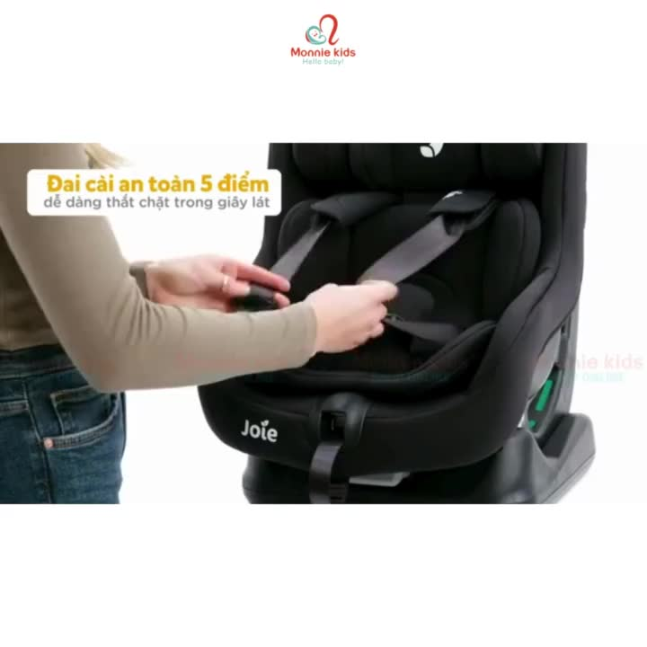
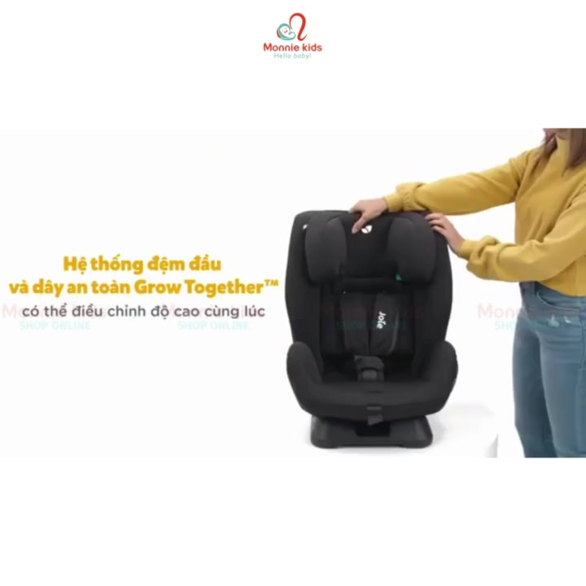
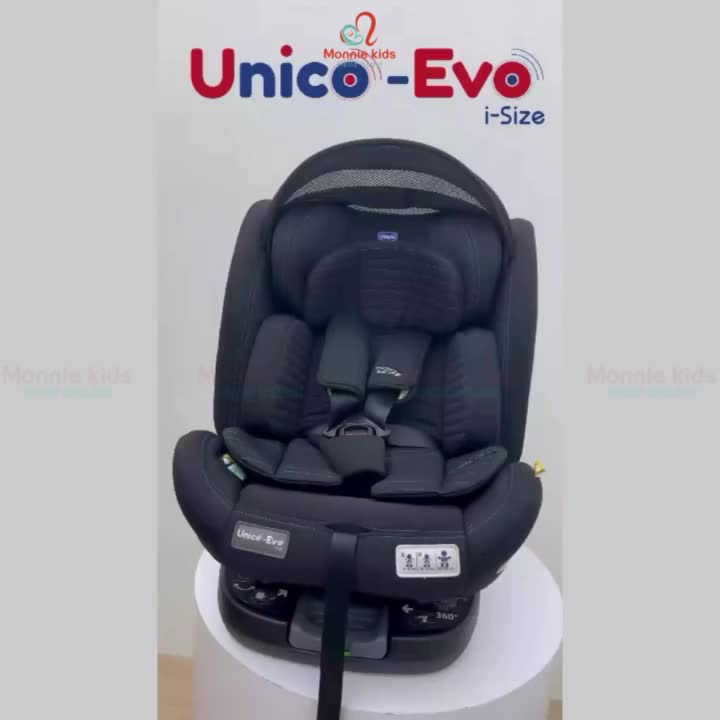
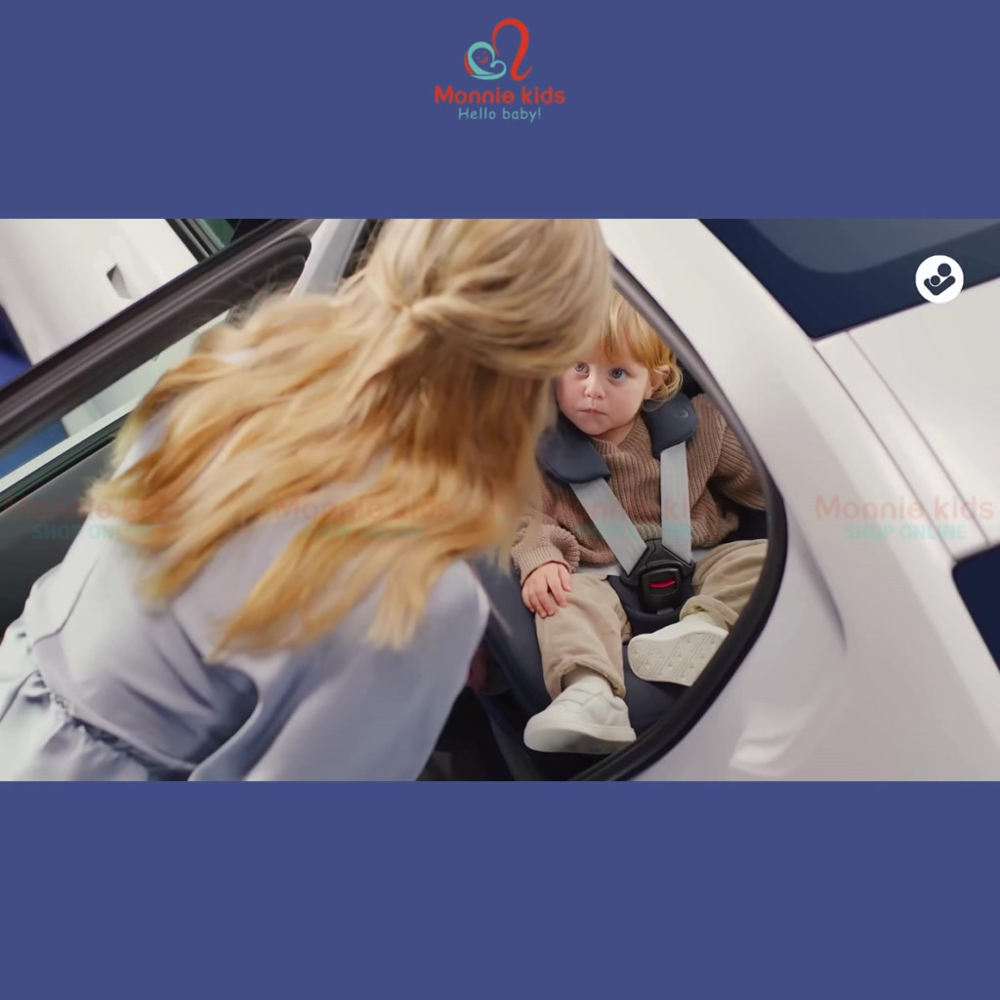
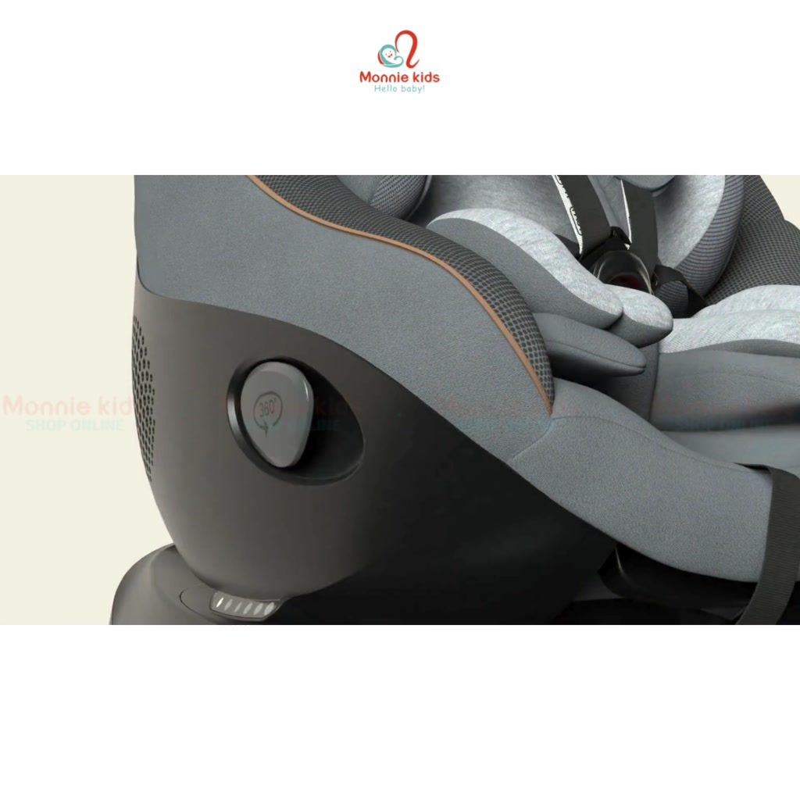

Phân tích chi tiết 6 ghế

Ghế ECE R129 rẻ nhất trong danh sách — lý tưởng cho gia đình muốn tiêu chuẩn an toàn mới nhất với ngân sách ~4,6 triệu. Đệm Tri-Protect™ 3 lớp bảo vệ hai bên vượt trội so với ghế cùng giá.
✓ Điểm mạnh
- Tiêu chuẩn ECE R129 — mới nhất châu Âu
- Đệm Tri-Protect™ bảo vệ hai bên đầu/vai
- ISOFIX lắp nhanh, chắc chắn
- Giá tốt nhất trong nhóm R129
✗ Điểm yếu
- Chỉ dùng đến 4 tuổi (không dùng lâu)
- Không xoay 360°
- Không tính năng lưng thoáng khí

1 chiếc ghế từ sơ sinh đến ~7 tuổi (25kg) — tiết kiệm nhất về lâu dài. Khung thép bền hơn khung nhựa, dây đai 5 điểm cho bé nhỏ chuyển sang đai xe khi lớn. Điều chỉnh đệm đầu + đai cùng lúc tiện lợi.
✓ Điểm mạnh
- Dùng từ sơ sinh đến 25kg (~7 tuổi)
- Khung thép bền hơn khung nhựa
- Điều chỉnh đệm đầu + dây đai cùng lúc
- Vải tháo rời giặt máy được
✗ Điểm yếu
- ECE R44 (tiêu chuẩn cũ hơn R129)
- Không xoay 360°
- Nặng hơn ghế nhựa thông thường

Tốt nhất cho gia đình muốn 1 ghế từ sơ sinh đến 12 tuổi với chứng nhận i-Size. 6 mức ngả lưng nhiều nhất nhóm — 2 cho quay sau, 4 cho quay trước. Hệ thống Grow Together điều chỉnh đệm đầu + đai 1 chuyển động.
✓ Điểm mạnh
- i-Size — tiêu chuẩn cao nhất trong nhóm Joie
- Dùng đến 12 tuổi (36kg/145cm)
- 6 mức ngả — nhiều nhất nhóm
- Grow Together: 1 tay điều chỉnh đầu + đai
✗ Điểm yếu
- Không xoay 360°
- Giá cao nhất trong 3 ghế Joie
- Kích thước lớn hơn, cần kiểm tra vừa xe

Giải pháp tốt nhất cho xe SUV cao: xoay 360° chỉ 1 tay gạt, lưng Air thoáng khí giảm nóng lưng bé, ISOFIX 3 điểm cố định tuyệt đối. Thương hiệu Chicco Ý 60 năm kinh nghiệm, bán tại 110+ quốc gia.
✓ Điểm mạnh
- Xoay 360° 1 tay — tiện nhất nhóm xoay
- Lưng Air thoáng khí — mát hơn lưng kín
- ISOFIX 3 điểm — cố định tốt nhất
- Dùng đến 12 tuổi
✗ Điểm yếu
- Giá cao (~12,8 triệu)
- Không có Side Safety như Chicco Seat 105
- Kích thước lớn, cần đo xe trước

Ghế Maxi-Cosi cao cấp Hà Lan đang có giá tốt — G-CELL bảo vệ va chạm bên tốt nhất nhóm, AirProtect đệm đầu độc quyền, vải EcoCare tái chế. Xoay 360° 1 tay, Climaflow kiểm soát nhiệt độ.
✓ Điểm mạnh
- G-CELL bảo vệ va chạm bên — tốt nhất nhóm
- AirProtect đệm đầu — hấp thụ lực va chạm đầu
- Climaflow — kiểm soát nhiệt độ, mát hơn
- EcoCare — vải tái chế thân thiện môi trường
✗ Điểm yếu
- Chỉ dùng đến 4 tuổi (ngắn hơn nhóm 0–12)
- Giá cao (~12,3 triệu) dù dùng ít tuổi hơn

Ghế an toàn nhất trong danh sách: ECE R129/04 (phiên bản tiêu chuẩn mới nhất), Side Safety chống va chạm bên, ISOFIX + chân đỡ 3 điểm. 6 mức ngả + 8 mức tựa đầu điều chỉnh đồng thời. Không thỏa hiệp về an toàn.
✓ Điểm mạnh
- ECE R129/04 — phiên bản tiêu chuẩn mới nhất
- Side Safety — chống va chạm bên cao cấp
- ISOFIX + chân đỡ — cố định 3 điểm tốt nhất
- 8 mức tựa đầu + đai điều chỉnh đồng thời
✗ Điểm yếu
- Chỉ dùng đến 4 tuổi
- Giá cao nhất nhóm (~16,3 triệu)
- Kích thước lớn do Side Safety